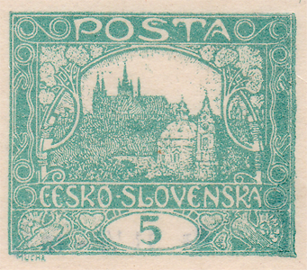
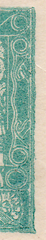
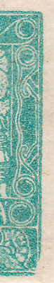
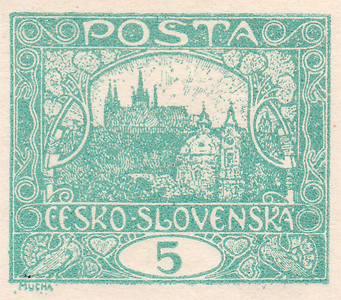
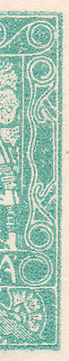
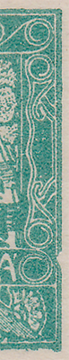
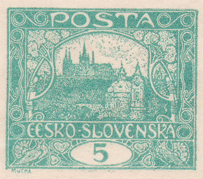
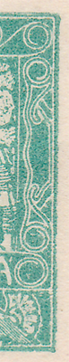
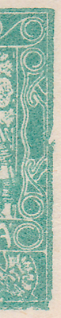
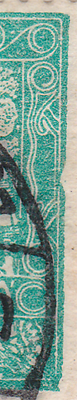

5h modrozelená – retuš na 100/I a (ne)monografická vada na 90/II a 100/II
5h modrozelená (Pof. č. 4) je velmi zajímavá hodnota. Vytisklo se necelých 119 milionů známek, což je nejvíce z celé emise Hradčany. Pro takové množství bylo potřeba zhotovit 8 tiskových desek (také nejvíce ze všech hodnot emise). 5h hodnota, na rozdíl od 15h nebo 25h, obsahuje jen několik známkových polí spirálového nebo příčkového typu. Velkou variabilitu ale představuje kombinace 8 tiskových desek, 3 katalogových odstínů a vedle nezoubkované varianty také 6 úředně použitých druhů perforace.
V rámci studia a rekonstrukce první a druhé tiskové desky jsem narazil na velmi zajímavé odchylky u 100. známkového pole z první a druhé tiskové desky a také u 90. známkového pole na druhé tiskové desce.
100/I
Na tomto známkovém poli z první tiskové desky došlo v průběhu tisku k retuši – úpravě celého pravého okraje kresby. Původní, neúměrně ke zbytku kresby robustní okraj, byl zbroušen. Tato úprava se ale úplně nepovedla – pravý dolní roh byl zbroušen podstatně více a na kresbě je jasně viditelné jeho poškození.
Z monografie víme, že první a druhá tisková deska se použila pro známky nezoubkované, hřebenové zoubkování 13¾ : 13½ (A) a řádková zoubkování 11½ (D) a 11½ : 10¾ (E). U zoubkování D mám zatím doložen pouze výskyt původní varianty 1 se silným okrajem. V tabulce níže lze vidět, že u zoubkování E se vyskytuje jen původní neupravená varianta kresby.
| varianta 1 silný okraj | varianta 2 zbroušený okraj | |
|---|---|---|
| nezoubkovaná | ✔ | ✔ |
| A | ✔ | ✔ |
| D | ✔ | — |
| D | ✔ | — |
| E | ✔ | — |
Z praxe mohu konstatovat, že výskyt známek po úpravě (varianta 2), tedy se zbroušeným okrajem, je v nezoubkovaném provedení podstatně nižší než před úpravou (varianta 1). V případě zoubkování A je to naopak.



varianta 1 · varianta 2
90 a 100/II
Pokud se orientujete v monografických deskových vadách – vadách negativu, které vyjmenoval Dr. Kubát v Monografii československých známek (1968) – víte, že se na těchto polích uvádí vada „pravý rám dole vyštípnutý“ resp. „pravý rám uprostřed vyštípnutý“.
Mohu konstatovat, že obě vady nejsou vadami negativu. Vyskytují se totiž známky obou známkových polí bez poškození. Obě vyštípnutí byla tedy způsobena nesprávnou manipulací s tiskovou deskou během tisku. Výskyt obou typů v různých zoubkováních ukazuje tabulka; zatím se mi nepodařilo dohledat variantu 1 v zoubkování A.
| varianta 1 nepoškozený okraj | varianta 2 poškozený okraj | |
|---|---|---|
| nezoubkovaná | ✔ | ✔ |
| A | — | ✔ |
| E | ✔ | — |
U známkového pole 90/II jsem zjistil dvě varianty: nepoškozený a poškozený okraj:



varianta 1 · varianta 2
V případě známkového pole 100/II se vyskytuje kresba bez poškození (varianta 1) a s poškozením, které se dále vyvíjí (varianty 2a a 2b) – je vidět odlomení spodního okraje vrypu do rámu kresby:




varianta 1 · varianta 2a · varianta 2b
V rámci jednoho archu se pochopitelně vyskytuje buď jen varianta 1 známkových polí 90 a 100, nebo jen varianta 2. Četnost výskytu obou typů se snažím mapovat.
Na závěr teorie: obě tabulky ukazují, že v případě zoubkování E se vyskytuje vždy jen jedna varianta. Usuzuji z toho, že se retuš na první tiskové desce a poškození na druhé desce mohly udát ve shodnou dobu – během procesu čištění desek. Stoprocentně se ale tato teorie potvrdit nedá.